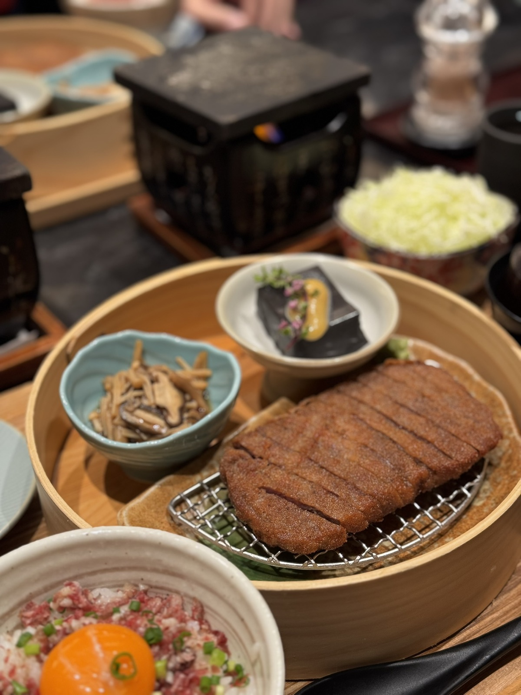
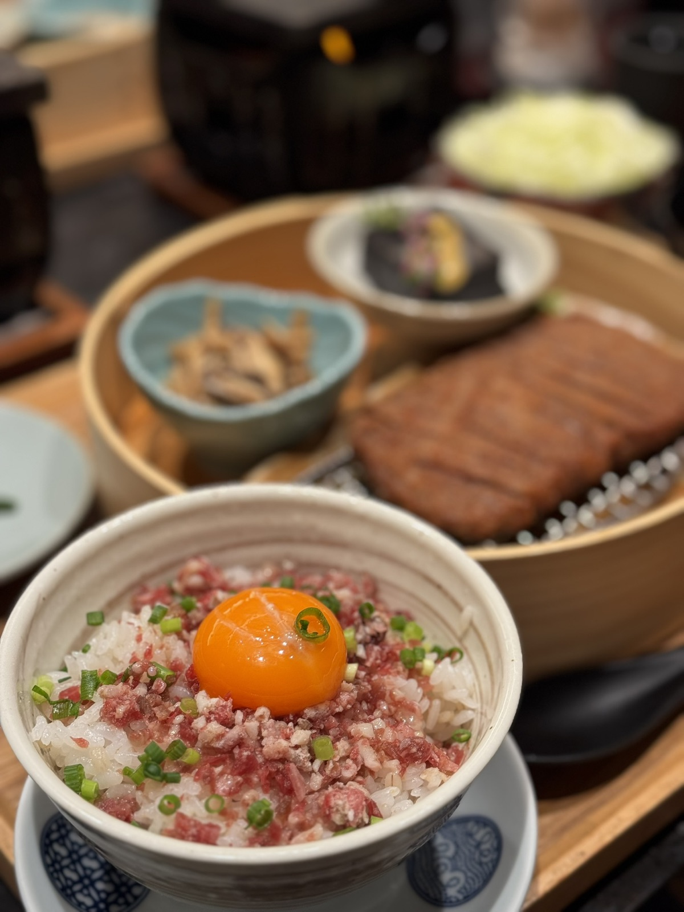
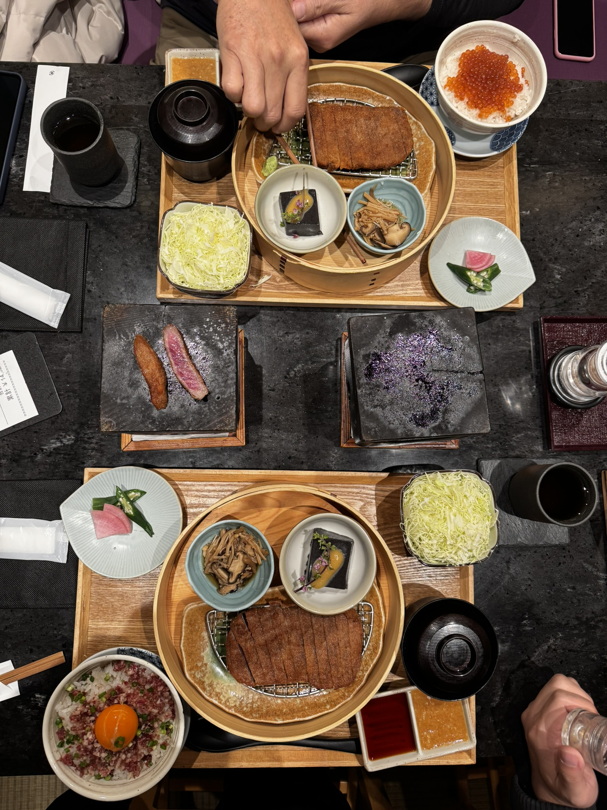

Tokyo / 26 Jan 2025 / Late Lunch
The best gyukatsu after landing in Tokyo.
After flying from Kansai to Tokyo, Gyukatsu Motomura became the perfect late lunch: crispy, warm, rich, and honestly one of the best meals of the trip.
Personal Review
Gyukatsu Motomura was worth the hype
The beef cutlet was crispy outside and tender inside, and the small hot stone made the meal more fun because each slice could be finished bite by bite.
The rice bowls, cabbage, pickles, sauces, and small side dishes made the whole set feel complete. It was not just a quick lunch after a flight; it became the meal that made Tokyo start strong.
Worth it? Yes. Best gyukatsu, and one of the strongest food memories from the trip.
Back to Tokyo trip note

